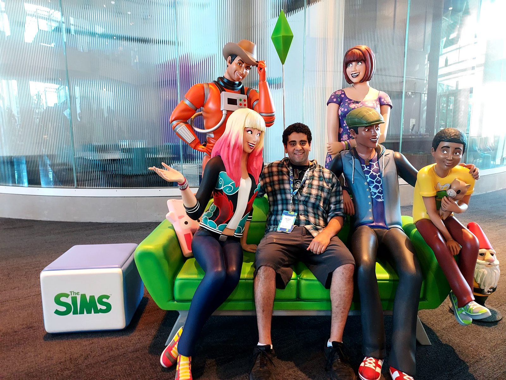

Software Engineer · 2024 → Present
Building the developer toolchain behind The Sims: WPF/C# desktop apps, Electron tooling in React/TypeScript, and the content pipeline that connects them.

A 25-year-old franchise has 25 years of tooling debt. Content authors were jumping between brittle internal apps, custom asset validators, and ad-hoc scripts to ship a single feature.
ApproachProduction-quality WPF/C# desktop apps and React/TypeScript Electron apps, with shared validation primitives so the same rules run in CLI, app, and CI.
OutcomeMultiple shipped tools now in the daily workflow of the Maxis dev team; reduced manual asset-verification overhead; toolchain features extended to community creators in The Sims Maker Suite.
I work on the Sims Tools team, the engineers who build what every artist, designer, and gameplay programmer at Maxis touches every day. Specifically:
Desktop apps in WPF/C#. Internal tooling on unreleased projects: architecture, data binding, and UX for the tools that authors actually use to pack and validate content.
Electron apps in React/TypeScript. Desktop tools released to the community as part of the Sims Maker Suite and Creator Program, bringing the same validation and pipeline visibility that internal developers rely on to mod creators and community members.
Pipeline automation in Python. Scripts for data migration and asset pipelines. The infrastructure that keeps the team unblocked and assets flowing cleanly through the build.
The Sims is unusual in that the audience for the tools and the audience for the game overlap. Players become creators, creators become the long tail of the franchise. Tooling decisions ripple outward: a quality-of-life win for an internal artist becomes a quality-of-life win for someone making mods in their bedroom. That's the part I care about.